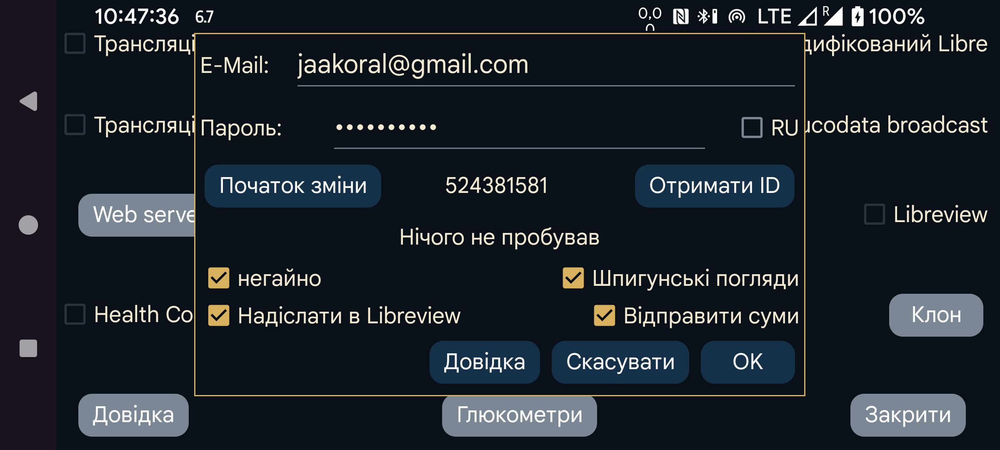

Juggluco може надсилати до LibreView дані глюкози й введені значення.
Як і програма LibreLink, вона надсилає дані за останні 89 днів.
Щоб скористатися службою, створіть обліковий запис LibreView на https://libreview.com і вкажіть тут адресу електронної пошти та пароль. Не надсилайте дані за той самий період до одного облікового запису LibreView більш ніж з одного джерела, наприклад одночасно з LibreLink і Juggluco. Наявні пристрої можна видалити в LibreView у розділі Налаштування облікового запису→Мої пристрої. Інший варіант — створити новий обліковий запис LibreView.
Для ввімкнення також потрібно позначити «Надіслати в Libreview».
Juggluco надсилає нові дані до LibreView щоразу, коли ви переходите з програми, якщо це не робилося протягом попередніх 20 хвилин. Дані можна надіслати вручну, натиснувши «Відправити зараз».
Крім значень глюкози, до LibreView можна надсилати й інші введені значення. Для цього торкніться «Відправити суми» і вкажіть призначення кожної мітки.
RU: установіть цей параметр, якщо використовується https://libreview.ru замість https://libreview.com. Це стосується лише датчиків Libre 2. Libre 3 працює тільки з libreview.com, оскільки російської програми Abbott Libre 3 немає.
Негайно: надсилати значення глюкози до LibreView одразу після надходження від датчиків Libre 2 або 3. Це корисно лише разом із LibreLinkUp. Для цього в одній із програм Abbott Libre потрібно додати з’єднання LibreLinkUp до цього облікового запису LibreView. Якщо у вашій країні програми Abbott Libre немає, можна скористатися модифікованою програмою Libre 3.
Іноді значення не видно одразу, бо LibreLinkUp не оновлює екран автоматично. Будьте уважні: LibreLinkUp може показувати застарілі дані. Якщо торкнутися графіка, програма показує давніше, а не поточне значення; це легко не помітити.
Шпигунські погляди: коли параметр увімкнено, Juggluco повідомляє LibreView, чи було значення переглянуто. Коли вимкнено, Juggluco завжди вказує, що його не переглядали. Надійно передавати ці відомості можна лише тоді, коли також увімкнено Негайно . Juggluco має постійно бути підключеною до інтернету, щоб фіксувати всі перегляди Libre 3; Libre 2 пам’ятає їх, доки програму не завершено.
Початок зміни: почати заново й повторно надіслати дані з указаних дати й часу. Це потрібно зробити під час переходу на новий обліковий запис LibreView.
Результат останньої спроби надсилання до LibreView показано під кнопкою «Отримати ID».
LibreView використовує для аналізу історичні значення, а Juggluco — потокові значення на екрані статистики (ліве середнє меню→Статистика). Через це показники LibreView і Juggluco трохи відрізняються. Потокові значення більш екстремальні, тому оцінка Juggluco дещо гірша: менший час у діапазоні й більша варіабельність. Також час активності датчика за Juggluco менший, оскільки враховується кожне пропущене потокове значення.
Juggluco може одночасно працювати з кількома датчиками, тоді як LibreLink обробляє лише один. Juggluco також надсилає до LibreView дані лише одного датчика за раз: спочатку всі доступні дані одного, а після їх завершення — наступного. Після переходу до наступного датчика Juggluco не повертається до попереднього, імітуючи правило одного датчика LibreLink. Тому якщо одночасно працюють кілька датчиків і новіший завершується раніше за старіший, дані старішого більше не надсилатимуться до LibreView.
Отримати ID: якщо потрібно лише отримати ID облікового запису LibreView, але не надсилати дані, введіть адресу електронної пошти й пароль і натисніть «Отримати ID». У тому самому рядку перед кнопкою буде показано ID; це може тривати певний час, а екран не оновлюється автоматично. Отримання ID із сервера LibreView дає змогу використовувати датчик FreeStyle Libre 3, який уже працював із програмою Abbott Libre 3 під цим обліковим записом.
Номер ID облікового запису LibreView також можна перетворити з UUID, показаного в адресному рядку звітів LibreView, і ввести вручну в Juggluco.
Дані датчиків Sibionics і Dexcom до LibreView не надсилаються.
Дані у форматі LibreView також можна зберегти через ліве середнє меню→Експорт або через Web server Juggluco. До експорту включаються також значення глюкози з датчиків Dexcom і Sibionics.